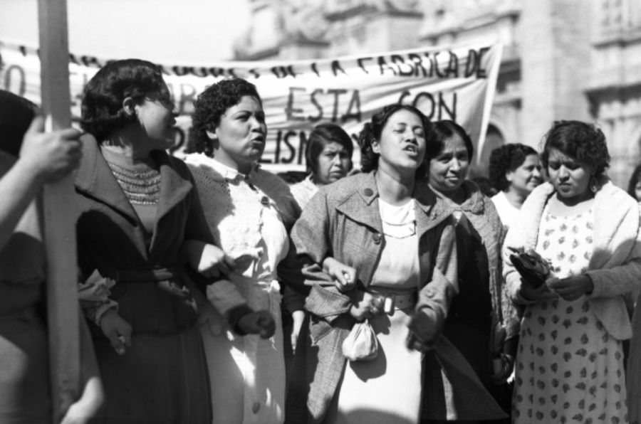

¿Qué es el Feminismo Interseccional?
El feminismo interseccional representa un enfoque fundamental que reconoce cómo múltiples formas de opresión -como el racismo, el clasismo, el colonialismo, la discriminación por capacidad, edad u orientación sexual- se entrecruzan y se potencian mutuamente en la experiencia de las mujeres. Este marco teórico y político, acuñado inicialmente por Kimberlé Crenshaw, ha encontrado en Latinoamérica un terreno fértil para su desarrollo y resignificación, adaptándose a las complejas realidades de una región marcada por profundas desigualdades estructurales y un legado colonial persistente.
En el contexto latinoamericano, el feminismo interseccional ha permitido visibilizar cómo las mujeres indígenas, afrodescendientes, campesinas, migrantes y de sectores populares enfrentan formas específicas de discriminación que no pueden comprenderse únicamente desde una perspectiva de género. Sus luchas no se limitan a reivindicaciones feministas tradicionales, sino que incorporan demandas por territorio, autonomía, justicia ambiental y reconocimiento cultural, desafiando tanto al patriarcado como al capitalismo extractivista y al racismo estructural.
Raíces y Evolución del Feminismo Interseccional en la Región
El feminismo interseccional en Latinoamérica bebe de fuentes diversas: de los feminismos comunitarios indígenas que vinculan la lucha antipatriarcal con la defensa del territorio; de los feminismos negros que denuncian el racismo estructural; y de los feminismos populares que priorizan las luchas contra la pobreza y la explotación económica. Esta diversidad ha enriquecido el movimiento, permitiendo el desarrollo de enfoques situados que responden a realidades específicas sin perder de vista los patrones comunes de opresión.
La nueva generación de feministas latinoamericanas ha adoptado la interseccionalidad no como un concepto académico abstracto, sino como una herramienta política concreta para construir alianzas más amplias y democráticas. Colectivos como "Ni Una Menos" en Argentina, "Las Tesis" en Chile o "Brujas del Mar" en México han demostrado la potencia de un feminismo que dialoga con las luchas antipatriarcales, antirracistas, anticapitalistas y ecologistas, generando movilizaciones masivas que han transformado el panorama político regional.
"No podemos hablar de feminismo sin hablar de colonialismo. Nuestros cuerpos han sido territorios de conquista tanto como nuestras tierras. La descolonización es inseparable de la liberación de las mujeres."Lorena Cabnal, feminista comunitaria xinka (Guatemala)
"El feminismo interseccional nos exige mirar más allá de nuestras propias opresiones y reconocer nuestros privilegios. Solo así podremos construir un movimiento realmente transformador."Rita Segato, antropóloga feminista (Argentina)
"Ser mujer, negra y pobre en Brasil significa enfrentar tres veces más violencia. Nuestro feminismo no puede ser solo blanco y de clase media, debe ser antirracista y anticapitalista."Sueli Carneiro, filósofa y activista (Brasil)
Desafíos y Perspectivas Futuras
Pese a sus avances, el feminismo interseccional en Latinoamérica enfrenta importantes desafíos. Por un lado, debe resistir los intentos de cooptación por parte de instituciones estatales y organismos internacionales que buscan vaciar su potencial transformador. Por otro, necesita seguir desarrollando herramientas para abordar tensiones internas, como las relacionadas con la inclusión de mujeres trans o con la distribución del poder dentro de los movimientos.
El futuro del feminismo interseccional en la región parece promisorio, con nuevas generaciones que incorporan perspectivas ecologistas, antiespecistas y digitales a sus luchas. La creciente visibilidad de feministas indígenas, afrodescendientes, disidentes sexuales y con discapacidad está transformando radicalmente el movimiento, haciéndolo más representativo y potente. En un contexto de crisis civilizatoria, el feminismo interseccional latinoamericano se erige como una brújula ética y política indispensable para imaginar y construir mundos más justos y habitables.